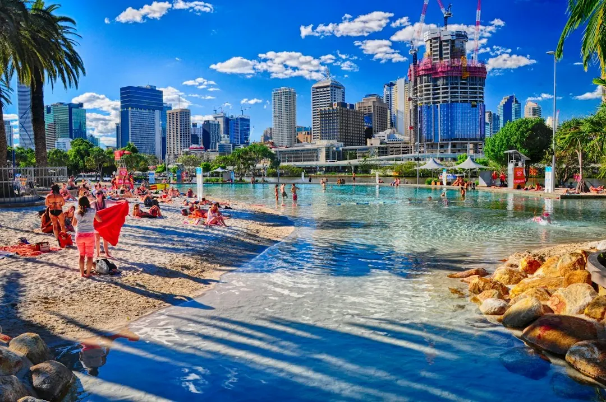

For homeowners comparing concrete pool builders brisbane options, the practical decision is how the design, site conditions, approvals and construction sequence fit the backyard.
Concrete Pool Builders Brisbane Explained
Concrete Pools Brisbane describes a poured pool as one shaped to the backyard rather than restricted by a factory mould. That can help when the preferred outline, depth or position must work around the house, access route or available outdoor area.
Before requesting a quote, record the slope, visible rock, side access, trees, sewer lines and likely distance from the house and boundaries. A compact plunge pool may suit a courtyard, while a pool and spa combination needs planning for layout, heating and running costs. A larger design also needs room for excavation, movement around the edge and later landscaping.
Brisbane sites vary. The published guide identifies Kenmore, Brookfield and Chapel Hill as hilly western areas where slopes and rock can affect excavation. It also notes reactive clay on some older blocks. Ask how the proposed structure, drainage and excavation method respond to the actual lot, rather than treating the suburb name as a site assessment.
Compare poured and precast construction
A custom poured pool is built in place, so its dimensions and outline can be tailored to the yard. A precast pool uses a factory made shell craned into position and is described as having a shorter on site build. Neither option can be judged without checking delivery, lifting, excavation and the work required around the finished structure.
Ask for both approaches to be assessed against the same site information. The written comparison should address narrow access, crane or excavator routes, retaining on a slope, interior finish, heating, fencing, paving and landscaping. This separates the pool structure from the work that may surround it.
Make approvals and scope explicit
The guide points readers to council approval, certification and pool fencing, with Brisbane City Council and QBCC guidance identified for checking current requirements. Sloping or flood affected lots may need additional checks. Ask what applies to the property and record the answer before construction begins.
- Confirm the proposed position, dimensions and access route.
- Ask how rock, difficult clay, drainage and retaining will be handled.
- Record who lodges applications, books inspections and arranges fencing sign off.
- Separate included work from exclusions and items dependent on another trade.
A written quote should state assumptions about ground conditions, finishes, heating and surrounding works. If an item cannot be confirmed until excavation, ask when its cost and timing will be reviewed.
Read the build sequence and weather risk
The described sequence runs from design and approval through excavation, steel, spraying, curing and finishing. Each stage depends on the conditions found on the lot and on access remaining workable. Ask for the expected order of work and the decisions required from the homeowner at each stage.
Summer storms can flood an open excavation, soften clay sides and delay spraying or curing. If the dig may run through wetter months, ask how weather delays affect the programme, which stages can proceed after rain and whether temporary drainage is included. Starting excavation in drier months is presented as a way to allow a more realistic programme, not as a completion guarantee.
Who this guide applies to
This guide is for Brisbane homeowners considering a new poured or precast pool, a plunge pool, a pool and spa combination, a sloping block design, or resurfacing and crack repair for an older concrete pool. It is also useful when comparing projects in Wynnum, Bulimba, Ashgrove and Sunnybank Hills, where housing age, block dimensions and ground conditions can affect planning.
It is most useful before a quote is requested, while the position and scope can still be tested. The enquiry guidance says plans are not needed for the initial request. Provide the suburb, a short description and the main site questions, then seek a written quote before work begins.
- Define the use. Choose a custom pool, precast shell, plunge design, pool and spa combination or resurfacing based on the yard and household use.
- Inspect the property. Note slope, rock, clay, trees, sewer lines, boundaries and the width of every access route.
- Build a comparable scope. List excavation, retaining, drainage, finish, heating, fencing, paving and landscaping so quotes address the same work.
- Confirm responsibilities. Have approval applications, inspections, fencing sign off, exclusions and weather assumptions identified in writing.
- Request the quote. Provide the suburb and a short project description, then check the written response before work starts.
| Choice | Question to ask | Information to compare |
|---|---|---|
| Custom poured or precast | How will access and the preferred shape affect this lot? | Construction method, delivery or excavation requirements, and site preparation |
| New pool or resurfacing | Is the existing structure suitable for repair? | Crack repair, interior finish and the condition of the older pool |
| Standard or difficult site | What ground, slope, drainage or retaining work is expected? | Included work, exclusions, approval needs and programme changes |
This guide covers Brisbane pool choices, site conditions, approvals, construction stages and quote questions.